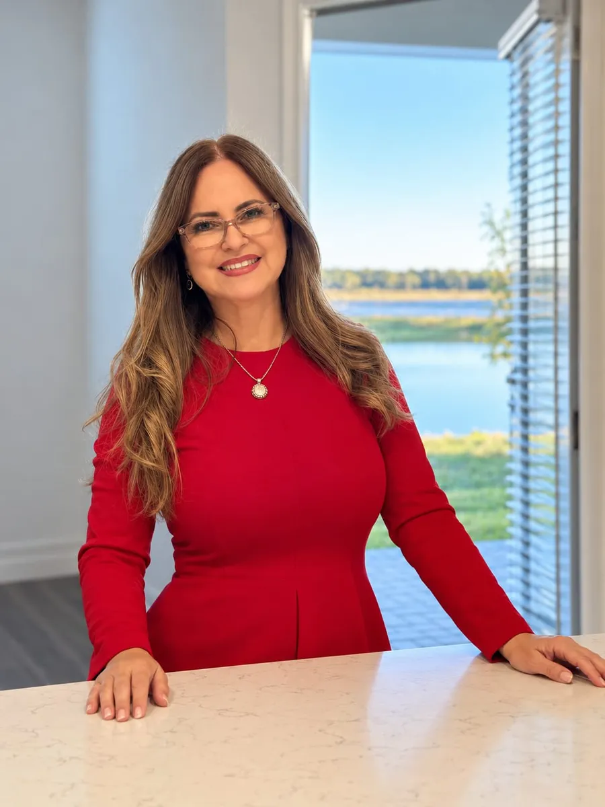

Land O' Lakes
Lagos, comunidades nuevas y casas con más espacio en Pasco County, con salida rápida a la Suncoast Parkway.

Adriana García · Realtor®
Te acompaño paso a paso para comprar, vender o encontrar tu primera casa en el norte de Tampa Bay, con atención cercana en español e inglés.
REALTOR® · LPT Realty
Cuéntame qué buscas y te doy un plan claro, sin compromiso.

Así de simple es el camino a tus llaves. Yo me encargo de que cada paso sea claro.
Hablamos de lo que buscas y te conecto con un lender para saber tu presupuesto real.
Seleccionamos y visitamos las casas que de verdad encajan contigo.
Negocio la mejor oferta y te acompaño hasta el día que recibes tus llaves.
Escríbeme o llámame y te respondo en español o en inglés.
Conozco el norte de Tampa Bay y te ayudo a elegir la zona que mejor va con tu estilo de vida.
Lagos, comunidades nuevas y casas con más espacio en Pasco County, con salida rápida a la Suncoast Parkway.
Una de las zonas de más crecimiento, con comunidades planificadas, compras y fácil acceso a la I-75.
Ambiente tranquilo, terrenos amplios y cerca de Tampa, entre Pasco y Hillsborough County.
Lagos, naturaleza y casas con terreno, ideal si buscas privacidad sin alejarte de la ciudad.
Depende del tipo de préstamo. Algunos préstamos FHA piden desde 3.5% de enganche y algunos convencionales desde 3% para compradores de primera vez, más los costos de cierre. Florida también tiene programas de ayuda para el enganche.
En la consulta gratis revisamos tu caso y te conecto con un lender para saber tu número real.
Sí. Hay lenders que ofrecen préstamos con ITIN. Normalmente piden un enganche más alto que un préstamo tradicional y un buen historial de ingresos y pagos. Te ayudo a encontrar el lender adecuado y a preparar tus documentos.
El costo incluye la comisión, que es negociable, y los costos de cierre del vendedor. En la consulta te preparo un análisis del precio de tu casa y un estimado de cuánto te quedaría después de vender.
No. La primera consulta es gratis y sin compromiso, en español o en inglés.
En el norte de Tampa Bay: Land O' Lakes, Wesley Chapel, Lutz, Odessa y sus alrededores en Pasco y Hillsborough County.